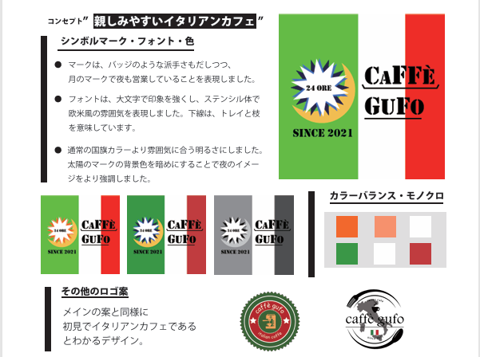

WORK / GRAPHIC DESIGN / LOGO
ロゴ制作物イタリアンカフェのロゴ提案
お店のコンセプトを、
ひとつのシンボルに。
「親しみやすいイタリアンカフェ」をコンセプトにした、caffè gufoのロゴ提案です。シンボルマーク、文字、配色の意図を整理し、モノクロ展開や使用イメージとともにまとめています。

01 / OVERVIEW
実績の概要
イタリアンカフェの雰囲気を伝えるロゴを提案。マークやフォント、色の選び方を言葉にし、デザインの意図と実際に使ったときのイメージをまとめた資料です。
02 / CONTENTS
制作の内容
- 01
シンボルマークと文字の設計
バッジのような印象のマークに、夜の営業を表す月のモチーフを組み合わせています。文字はステンシル体を用い、下線にはトレイと杖の意味を持たせています。
- 02
配色・モノクロの検討
イタリアを連想する配色に加えて、カラーバランスの違いとモノクロ版を掲載。用途に応じた見え方を検討しています。
- 03
使用イメージの提案
店舗の外観、カップ、紙袋などのモックアップを通じて、ロゴを使ったときの印象を示しています。